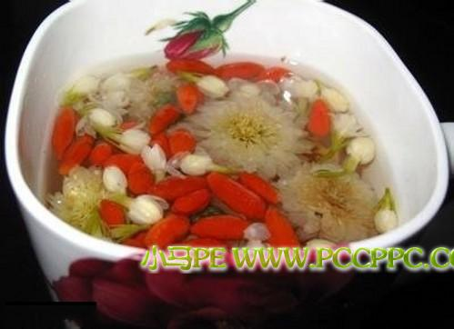

李清云（1677-1933）寿享256年，是清末民初的中医药学者，也是世界上着名的长寿老人。在他100岁时曾因在中医中药方面的杰出成就获政府的特别奖励，在他200岁时，仍常去大学讲学。这期间他曾接受过许多西方学者的来访。李清云一生娶过24个妻子，子孙满堂，他认为自己健康长寿的原因有三：
一、长期素食，
二、心静、开朗，
三、常年将枸杞煮水当茶饮。
英国、法国的医学科研工作者得到这一消息后，便对枸杞进行了深入研究，发现枸杞中含有一种没有见过的维生素，便取名为「维生素X」，也称为「驻颜维生素」。经动物实验证实，枸杞具有抑制脂肪在纤维内蓄积、促进肝细胞的新生，降低血糖及胆固醇等作用。枸杞的返老还童作用表现为：对脑细胞和内分泌腺有激活和新生作用，增强荷尔蒙的分泌，清除血中积存的毒素，从而可维持体内各组织器官的正常功能。
中国医学科学院研究证实，枸杞能提高人体免疫力，在抗肿瘤治疗中能减轻环磷醯胺的毒副作用，促进造血功能恢復，升高周围血的白细胞数，对机体产生保护作用。此外，枸杞能抑制脂肪在肝细胞内沉积，防止脂肪肝，促进肝细胞新生，也能抑制单胺氧化酶的活性。
西医印证了枸杞的强大功效，现代文明发现，枸杞至少含有：以甜菜硷[jiǎn]为主的5种生物硷，数十种甾醇类化合物，16种微量元素，多种维生素，(胡萝蔔素几乎是所有食品中含量最高的)，3种脂肪酸，16种氨基酸。大量的水溶性多糖。
据英国科学家最近研究，天然的β胡萝蔔素能抗老、抗癌及预防日照皮肤损伤。科学家认定，自由基是人体代谢产生的惰性因子，是机体老化及癌变的活性剂。而β胡萝蔔素能消灭清除自由基的恶性作用，因而是延缓衰老的一种较为理想的饮食因素。科研证明，饮食中如含有大量的胡萝蔔素，则某些癌症发病率可大为降低，尤其是口腔、肺、前列腺、皮肤和肝癌等。同时β胡萝蔔素还可增强人体免疫系统功能。
枸杞食疗配方
草龙珠蜜汁枸杞子：
枸杞子、龙眼肉各20克，葡萄干50克，蜂蜜20克，菠萝200克。以上各种用凈水沖凈，入小碗加蜂蜜及适量水入蒸笼蒸20分钟。常服延年益寿，充实正气，补气养血。
枸杞枇杷膏：
枸杞子、枇杷果、黑芝麻、桃仁各50克，蜂蜜适量，将枇杷果、桃仁切碎，枸杞子、黑芝麻洗凈加水浸泡放入锅内，大火烧沸，小火熬煮20分钟，取煎汁1次，加水再煮共取液3次，合併煎液，用小火浓缩至膏，加1倍分量的蜜即成，冷却装瓶待用，益肺肾补虚，平喘咳润燥，用于晚期肺癌虚弱，体质软弱患者。
此外还有几个偏方：
枸杞酒。取枸杞200克，白酒300克。将枸杞洗凈，沥干水分，剪碎后放入细口瓶内，加入白酒，密封瓶口。每日振摇酒瓶一次，浸泡15天即可饮用。饮完后再加入300克白酒，如上法再浸泡一次。每日临睡前饮用，每次饮20克。
枸杞粥。优质枸杞50克，粳米100克，洗凈后同煮成粥，可作为每天早餐食用。
枸杞蛋。鸡蛋两个，枸杞30克，洗凈后同用水煮。鸡蛋熟后去壳，放入汤内再煮，煮好后吃蛋喝汤。连吃3－5天为一疗程，停一天后继续食用。一般3个疗程即可见效！
《痛风偏方之枸杞》
具体吃法是：早晚各吃一次，每次1/4两，用开水沖泡，一併吃下去，然后随着年龄的增长，慢慢加大份量。其原理就是补肾，肾好了,痛风病也会好,同时也会对心血管疾病有很好的疗效。
下面顺便说说枸杞四季的吃法：
春天，万物復甦，人体阳气渐渐升发。枸杞味甘平补，春季可以单独服用，也可与味甘微温之品同时服用，助人阳气生髮，比如说黄芪等。
夏天，人们总是渴望一壶甘凉的茶水消除暑热，枸杞子味甘，如果配伍菊花、金银花、绿茶等，饮用后感觉心旷神怡。尤其是与菊花配伍，可以滋阴明目，清除肝火。
秋天，空气干燥，人们总感觉到口干唇裂，皮肤起屑，用很多润肤霜也难以抵挡萧瑟的秋风。这个季节吃枸杞子需要配滋润食品，比如雪梨、川贝、百合、玉竹等，效果更好。当然，也可以配用一些酸性的食品，如山楂等，以达「酸甘化阴」之效。
冬天，人们将自己裹进厚厚的棉衣中以助自身阳气抵御寒冷。枸杞子能够平补阳气，天天服用，特别是配伍羊肉、肉苁蓉、巴戟天、金匮肾气丸等一起用，有助于人体阳气生长，抵抗自然界严寒。

1.用于治疗男性不育症：
每晚取枸杞子15克洗凈嚼服，以连服一个月为一疗程，也可持续服用几个疗程，服药期间应适当地节戒房事。
2.用于治疗肥胖病：
每天取枸杞子30克洗凈，用开水沖泡当茶饮服，早晚各一次，连服四个月可以取得较好的降脂减肥效果，且无副作用。
3.用于辅助治疗消渴病（糖尿病）：
枸杞子100克洗凈，蒸熟后嚼食，每次10克，每日3次，可长期服用，能收辅助降血糖和止消竭之功。
每晚取枸杞子30克洗凈后嚼服，连服10天一般有效，必要时可连续服用。
5.高血压，糖尿病：
每日用枸杞子15克，煎汤代茶，常服有效。
6.夜盲，视力衰退：
枸杞子6克，白菊花6克，泡水代茶。
7.治疗眼疾
肝虚眼痛，见风流泪，云清遮眼，白内障等症：枸杞子250克，黄酒适量，浸于坛中，密封1-2个月后，每日食后适量饮，一日2次。
8.枸杞补肾可选用枸杞羊肾汤：夜盲，视力衰退：
枸杞子30克，羊肾一对，加水及调料后熬炖，喝汤吃肾。枸杞的补虚作用重点在补肾，治肾虚腰痛疗效显着，宜佐餐常用。
9.枸杞安神可用枸杞桂圆粥：
取枸杞10克，桂圆肉15克，红枣4枚，粳米100克，洗凈加水熬粥食用。此方对血虚失眠效果较好。宜常食。
10.枸杞健脑可选用枸杞羊脑璞：
取枸杞250克，羊脑一个，放入容器，加食盐、葱、姜、料酒，隔水蒸熟。食用前可酌加味精少许调味。宜佐餐食之。
11.枸杞乌髮可选用枸杞核桃璞：
取枸杞100克，核桃仁12个，小黑豆100克，加水适量熬至豆烂即成，放凉后置于冰箱内，每日早晚加热后各服15-30克。
12.妊娠呕吐：
枸杞子、黄芩各50克。置带盖瓷缸内，以沸水沖浸，待温时频频饮服，喝完后可再用沸水沖，以愈为度。
13.慢性萎缩性胃炎：
选宁夏枸杞子洗凈，烘干打：碎分装，每日20克，分2次于空腹时嚼服，2个月为1个疗程。
特别提示：
有酒味的枸杞已经变质，不可食用。枸杞子一年四季皆可服用，冬季宜煮粥，夏季宜泡茶。
枸杞性质比较温和，食用稍多无碍，但若毫无节制，进食过多反而会令人上火。